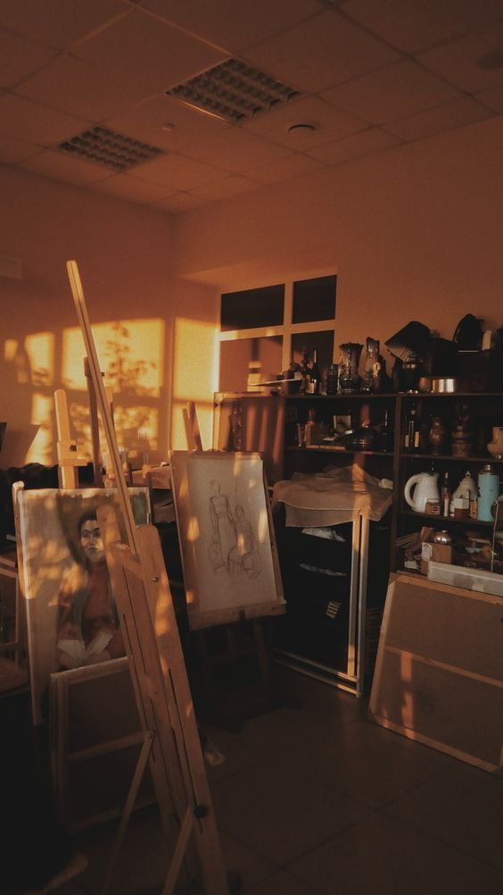
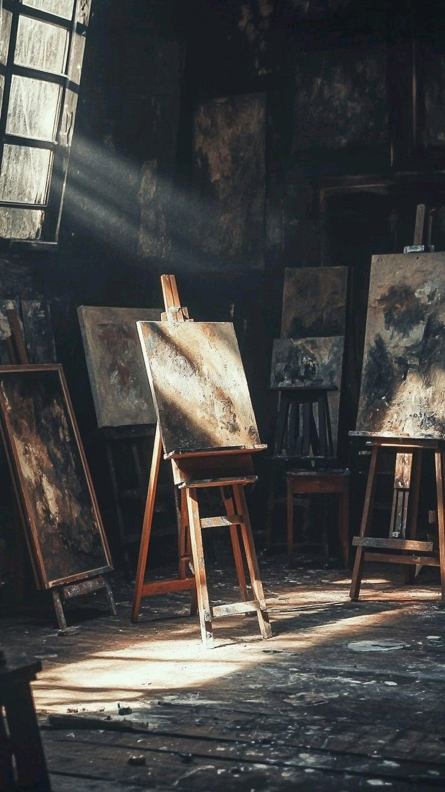
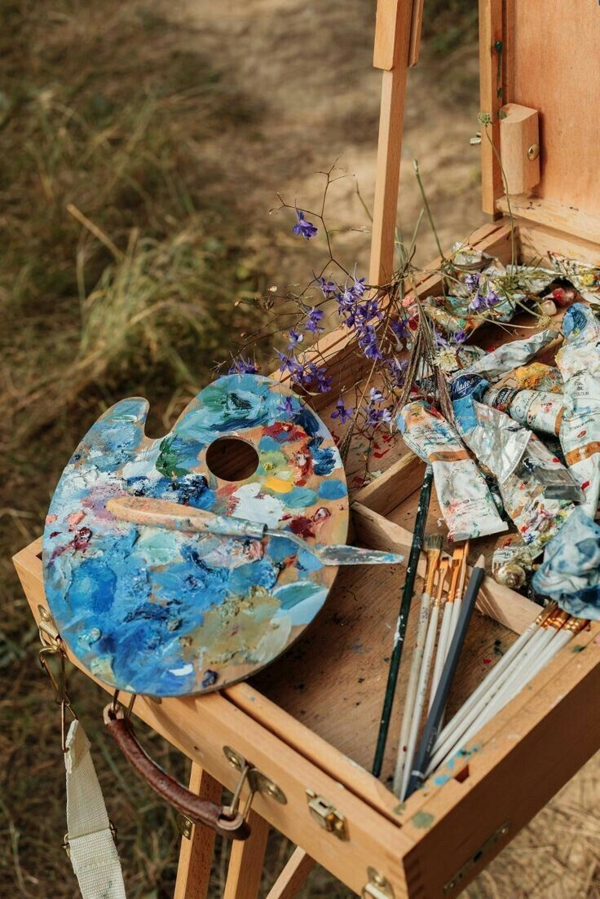

Welcome to the Drawing Guide
This website explains the basic materials used in drawing and painting. It also provides information about where to buy art supplies in Tralee, Ireland.



Drawing is a creative activity that allows people to express ideas and emotions through art. With the right materials and practice, anyone can learn to draw.